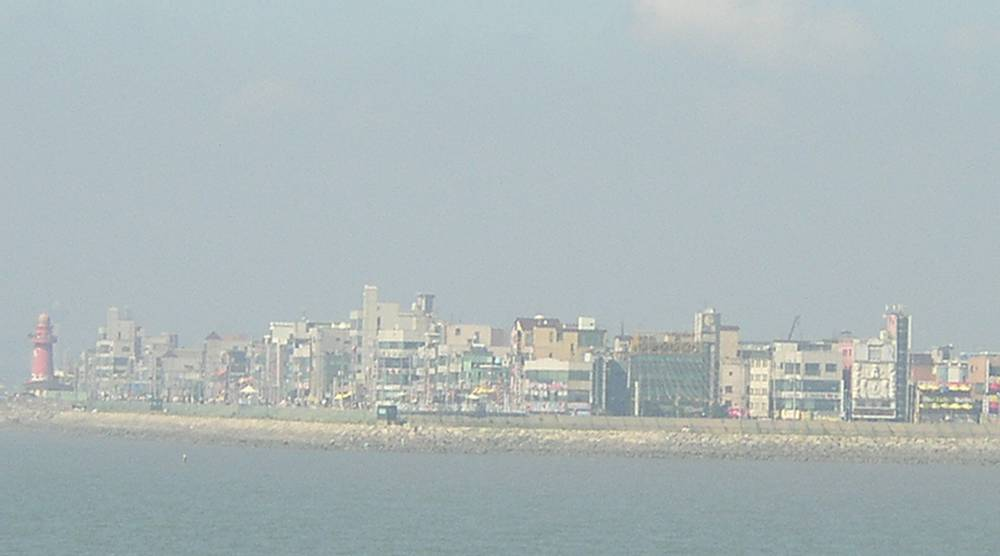

시흥형 RE100, 산단 소상공인 1,068곳이 전자투표로 지붕 태양광 결정…20년 햇빛소득 180억 원 기대

스틸랜드 1만2,613kW·찬성 86%, 시민협동조합 주차장 발전소 394kW 가동…태양광 허가용량 2023년 말 44MW→129MW
경기 시흥시 산업단지 스틸랜드의 입주 소상공인 1,068곳이 전자투표로 건물·주차장 지붕에 1만2,613kW 규모 태양광을 설치하기로 하고, 앞으로 20년 동안 약 180억 원의 햇빛소득을 나눠 갖는다. 2024년 입주기업들이 스스로 시작한 이 사업은 지난해 전자투표에서 86%의 찬성을 얻어 착공했으며, 연간 약 1,600만kWh를 생산해 데이터센터 등에 공급하고 수익은 관리비 절감과 노후설비 교체에 쓴다. 희망공원 주차장에서는 시민협동조합이 운영하는 시민햇빛발전소 11·12호기(394kW)가 올해 1월 상업운전에 들어갔고, 시민은 조합과 펀드로 참여하고 시는 부지와 행정절차를 돕는다. 공영주차장 13곳에는 민간자본 태양광이 들어서며, 시는 지난달 7일 우선협상대상자와 협약을 맺고 관내 업체 활용과 시민 이익공유 방안을 받았다. 이와 별도로 도 특별조정교부금 11억6,500만 원으로 운동장 주차장 등 3곳에 353kW를 설치한다. 시의 태양광 발전사업 허가용량은 2023년 말 44MW(308건)에서 올해 10월 말 129MW(738건)로 약 2.9배 늘었다.
시민에너지 관점
입주 소상공인 86%가 직접 투표로 지붕 태양광을 결정하고 20년간 180억 원을 나눈다는 숫자는, 산업단지 지붕이 공동 소유의 소득원이 될 수 있음을 보여 준다. 독일·덴마크에서도 주민이 결정권과 지분을 가진 사업일수록 반대가 적고 오래 간다. 민간자본 주차장 사업은 '시민 이익공유'를 약속했지만 그 몫이 얼마인지는 아직 드러나지 않았다. 시흥시는 협약서의 이익공유 비율을 공개하고, 시민햇빛발전소처럼 시민이 직접 출자하는 몫을 공영주차장 사업에도 의무로 넣어야 한다.
출처: 비욘드포스트 2026-11-11 송인호 원문 보기
始興型RE100、産業団地の小規模事業者1,068社が電子投票で屋根置き太陽光を決定…20年で太陽光所得180億ウォン見込み
スティールランド1万2,613kW・賛成86%、市民協同組合の駐車場発電所394kWが稼働…太陽光の許可容量は2023年末の44MW→129MW
京畿道始興市の産業団地「スティールランド」に入居する小規模事業者1,068社が、電子投票で建物と駐車場の屋根に1万2,613kW規模の太陽光を設置することを決め、今後20年間で約180億ウォンの太陽光所得を分け合う。2024年に入居企業が自ら始めたこの事業は、昨年の電子投票で86%の賛成を得て着工し、年間約1,600万kWhを発電してデータセンターなどに供給、収益は管理費の削減や老朽設備の更新に充てる。希望公園の駐車場では市民協同組合が運営する市民太陽光発電所11・12号機（394kW）が今年1月に商業運転を始め、市民は組合とファンドで参加し、市は用地と行政手続きを支援する。公営駐車場13カ所には民間資本の太陽光が設置され、市は先月7日に優先交渉対象者と協約を結び、地元企業の活用と市民への利益共有の案を受け取った。これとは別に、道の特別調整交付金11億6,500万ウォンで運動場駐車場など3カ所に353kWを設置する。市の太陽光発電事業の許可容量は2023年末の44MW（308件）から今年10月末には129MW（738件）へと約2.9倍に増えた。
市民エネルギーの視点
入居する小規模事業者の86%が自ら投票で屋根置き太陽光を決め、20年で180億ウォンを分け合うという数字は、産業団地の屋根が共同所有の収入源になりうることを示している。ドイツやデンマークでも、住民が決定権と持分を持つ事業ほど反対が少なく長続きする。民間資本の駐車場事業は「市民との利益共有」を約束したが、その取り分がいくらかはまだ明らかではない。始興市は協約書の利益共有の比率を公開し、市民太陽光発電所のように市民が直接出資する枠を公営駐車場事業にも義務として盛り込むべきだ。
出典: 비욘드포스트 2026-11-11 송인호 原文を読む
始兴型RE100：产业园区1,068家小商户电子投票决定屋顶光伏，预计20年阳光收入180亿韩元
Steelland 1万2,613kW、赞成率86%；市民合作社停车场电站394kW投运；光伏许可容量由2023年底的44MW增至129MW
韩国京畿道始兴市产业园区Steelland的1,068家入驻小商户通过电子投票，决定在建筑和停车场屋顶安装1万2,613kW光伏，今后20年将分享约180亿韩元的阳光收入。该项目由入驻企业于2024年自发发起，去年电子投票获得86%赞成后开工，年发电约1,600万kWh，供应数据中心等用户，收益用于降低管理费和更换老旧设备。在希望公园停车场，由市民合作社运营的市民阳光电站11、12号机组（394kW）已于今年1月投入商业运行，市民通过合作社和基金参与，市政府提供场地并协助行政手续。13处公共停车场将建设民间资本光伏，市政府上月7日与优先谈判对象签署协议，方案中包括使用本地企业和与市民分享收益。此外，市政府还将利用道特别调整交付金11亿6,500万韩元，在运动场停车场等3处安装353kW。该市光伏发电项目许可容量已从2023年底的44MW（308件）增至今年10月底的129MW（738件），增长约2.9倍。
市民能源视角
86%的入驻小商户亲自投票决定屋顶光伏，并在20年间分享180亿韩元，这说明产业园区屋顶可以成为共同所有的收入来源。在德国和丹麦，居民拥有决定权和股份的项目，反对越少、持续越久。民间资本的停车场项目承诺"与市民分享收益"，但具体份额尚未公开。始兴市应公开协议中的收益分享比例，并像市民阳光电站那样，把市民直接出资的份额作为义务写入公共停车场项目。
来源: 비욘드포스트 2026-11-11 송인호 查看原文
Siheung RE100: 1,068 Small Businesses in an Industrial Estate Vote for Rooftop Solar, Expecting ₩18 Billion in Sunlight Income over 20 Years
Steelland's 12,613kW backed by 86%; a citizen co-op's 394kW car park plant is running; licensed solar capacity up from 44MW at end-2023 to 129MW
Some 1,068 small businesses in Steelland, an industrial estate in Siheung, Gyeonggi Province, have used an electronic vote to put 12,613kW of solar on their building and car park roofs, and will share an estimated ₩18 billion in "sunlight income" over the next 20 years. Started by the tenant firms themselves in 2024, the project won 86% approval in a vote last year before construction began; it will generate about 16 million kWh a year for buyers such as data centres, with revenue going to lower maintenance fees and replace ageing equipment. At the Hope Park car park, Citizen Sunlight Power Plants No. 11 and 12 (394kW), run by a citizens' cooperative, began commercial operation in January, with residents investing through the co-op and a fund while the city provides the site and handles permits. Private-capital solar is also coming to 13 public car parks: the city signed an agreement with the preferred bidder on 7 October, whose proposal includes using local firms and sharing profits with residents. Separately, ₩1.165 billion in provincial grants will fund 353kW at three sites including a sports ground car park. The city's licensed solar capacity has grown about 2.9-fold, from 44MW (308 projects) at the end of 2023 to 129MW (738 projects) at the end of October.
Citizen Energy View
That 86% of tenant businesses voted for rooftop solar and will share ₩18 billion over 20 years shows industrial roofs can become a jointly owned source of income. In Germany and Denmark, projects where residents hold both a say and a stake face less opposition and last longer. The private car park scheme promises "profit-sharing with citizens", but the size of that share has not been disclosed. Siheung should publish the profit-sharing ratio in its agreement and require a direct citizen investment share, like its Citizen Sunlight Power Plants, in public car park projects too.
Source: 비욘드포스트 2026-11-11 송인호 Read the original